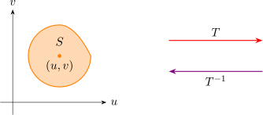
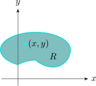
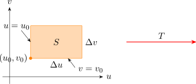
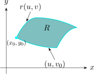
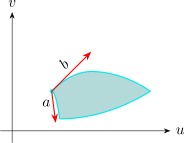
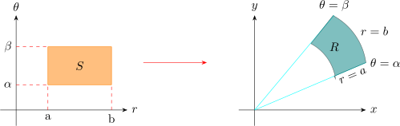
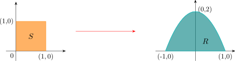
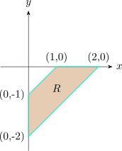

3.13 Change of Variables
Recall: A change of variables can be useful in double integrals, just like substitution in one - dimensional calculus. \[\iint \limits _R f(x,y)\,dA = \iint \limits _S f(r\cos \theta , r \sin \theta )\, r\,dr\,d\theta \] where \(S\) is the region in the \(r\,\theta - \) plane that corresponds to the region \(R\) in the \(xy-\) plane.
More generally, we consider a change of variables that is given by a “ Transformation \(T\) ” from the \(uv -\) plane to the \(xy-\) plane \[T(uv) = (x,y)\] where \(x = g(u,v) \hspace {0.2cm} y = h(u,v)\) or \(x = x (u,v)\hspace {0.2cm} y = y(u,v)\)
We assume that \(T\) is a \(C^1\) transformation.
\(\implies \) \(h\) and \(g\) have first partial derivatives.
|  |  |
\(T\) transforms \(S\) into the region \(R\) called image of \(S\), consisting of all images of all points in \(S\). It \(T^{-1}\) exists \[u = G(x,y)\hspace {0.2cm}, \hspace {0.3cm} v = H(x,y)\]
|  |  |
The vector \(\displaystyle {r(u,v) = g(u,v) \textbf {i} + h(u,v)\textbf {j}}\)
\begin {align*} r_u & = g_u(u_0,v_o)\textbf {i} + h_u ( u_0,v_0)\textbf {j}\\ & = \frac {\partial x}{\partial u}\textbf {i} + \frac {\partial y}{\partial u}\textbf {j}\\ \end {align*}
\begin {align*} r_v & = g_v(u_0,v_o)\textbf {i} + h_v ( u_0,v_0)\textbf {j}\\ & = \frac {\partial x}{\partial v}\textbf {i} + \frac {\partial y}{\partial v}\textbf {j} \end {align*}

\(a = r(u_0 + \Delta u , v_0 ) - r(u_0, v_0)\)
\(b = r(u_0, v_0 + \Delta v) - r(u_0,v_0)\)
\[\text {But}\hspace {0.4cm} r_u = \lim _{\Delta u \rightarrow 0} \frac {r(u_0 + \Delta u, v_0) - r(u_0,v_0)}{\Delta u}\]
\[\therefore \hspace {0.3cm} r_u \Delta u \approx r(u_0 + \Delta u, v_0) - r(u_0,v_0)\]
\[||||_y \hspace {0.3cm} r_v \Delta v \approx r(u_0 , v_0 + \Delta v) - r(u_0,v_0)\]
We can approximate the area of \(R\) by the area of the parallelogram \[ \big | \big (r_u\Delta u\big ) \times \big ( r_v \Delta \big ) = \big | r_u \times r_v \big |\,\Delta v \,\Delta u\]
\begin {align*} r_u \times r_v & = \begin {vmatrix} \textbf {i} & \textbf {j} & \textbf {k}\\\\ \dfrac {\partial x}{\partial u} & \dfrac {\partial y}{\partial u} & 0\\\\ \dfrac {\partial x}{\partial v} & \dfrac {\partial y}{\partial v} & 0\\ \end {vmatrix}\\\\ & = k \begin {vmatrix} \dfrac {\partial x}{\partial u} & \dfrac {\partial x}{\partial v}\\\\ \dfrac {\partial y}{\partial u} & \dfrac {\partial y}{\partial v}\\ \end {vmatrix}\\\\\\\\\\ \end {align*}
The Jacobian of the transformation \(T\) given \(x = g(u,v)\hspace {0.2cm} , \hspace {0.2cm} y = h(u,v)\) is
\begin {align*} \frac {\partial (x,y)}{\partial (u,v)} = J(u,v) = & \begin {vmatrix} \dfrac {\partial x}{\partial u} & \dfrac {\partial x}{\partial v}\\\\ \dfrac {\partial y}{\partial u} & \dfrac {\partial y}{\partial v}\\ \end {vmatrix}\\\\ & = \frac {\partial x}{\partial u}\cdot \frac {\partial y}{\partial v} - \frac {\partial x}{\partial v}\cdot \frac {\partial y}{\partial u} \end {align*}
\[\therefore \hspace {0.5cm} \Delta A \approx \begin {vmatrix} \dfrac {\partial ( x,y)}{\partial (u,v)}\\ \end {vmatrix} \Delta u\, \Delta v\] where the Jacobian is evaluated at \((u_0,v_0)\).
\begin {align*} \iint \limits _R f(x,y)\, dA & \approx \sum ^m_{i=1}\sum ^n_{j = 1} f(x_i , y_j)\, \Delta A\\\\ & \approx \sum ^m_{i=1}\sum ^n_{j = 1}f\big (g(u,v), h(u,v)\big )\begin {vmatrix} \dfrac {\partial ( x,y)}{\partial (u,v)}\\ \end {vmatrix}\, \Delta u \,\Delta v \end {align*}
This double sum is a Riemann sum for the integral \[\iint \limits _S f\big (g(u,v),h(u,v)\big )\, \Big |J(u,v)\Big |\, du\, dv \]
Formula for integration in polar coordinates is just a special case
\(x = g(r,\theta ) = r \cos \theta , \)
\( y = h(r,\theta ) = r\sin \theta \).
\begin {align*} J(r,\theta ) & = \begin {vmatrix} \dfrac {\partial x}{\partial r} & \dfrac {\partial x}{\partial \theta }\\\\ \dfrac {\partial y}{\partial r} & \dfrac {\partial y}{\partial \theta }\\ \end {vmatrix}\\\\ & = \begin {vmatrix} \cos \theta & - r \sin \theta \\ \sin \theta & r \cos \theta \\ \end {vmatrix}\\\\ & = r \cos ^2 \theta + r \sin ^2 \theta \\ & = r\\ \end {align*}
\begin {align*} \iint \limits _R f(x,y) dxdy & = \iint \limits _S f\big ( r\cos \theta , r \sin \theta \big )\, \begin {vmatrix} \dfrac {\partial (x,y)}{\partial (r, \theta )} \end {vmatrix} dr\hspace {0.1cm} d\theta \\\\ & = \iint \limits _S f\big ( r\cos \theta , r \sin \theta \big )\hspace {0.1cm}r\hspace {0.1cm}dr\hspace {0.1cm}d\theta \\ \end {align*}

Use the change of variables \(x = u^2 - v^2 \hspace {0.2cm}, \hspace {0.2cm} y = 2uv\hspace {0.2cm}\) to evaluate the integral \[\iint \limits _R y\,dA\] , where \(R\) is the region bounded by the \(x-\) axis and the parabolas \(y^2 = 4 - 4x\) and \(y^2 = 4 + 4x\).

\(T(R) = S\) where \(S\) is the square \([0,1]\times [0,1]\hspace {0.3cm} S\) is a much easier region than \(R\).
\begin {align*} \iint \limits _R y\,dA & = \iint \limits _S 2uv \,\big |4u^2 + 4v^2\big |\, du\, dv\\ & =\int ^1_0\int ^1_0 \big (8u^3v + 8uv^3\big )\,du\,dv\\ & = 2 \end {align*}
\[ \text {Check}\hspace {0.5cm} \iint \limits _R y\, dA = \int ^0_{-1}\int ^{\sqrt {4 + 4x}}_0 \,y \,dy \,dx\]
Evaluate the integral \(\displaystyle {\iint \limits _ R e^{(x+y)/(x-y)}dA}\hspace {0.2cm}\) where \(R\) is the trapezoidal region with vertices \((1,0)\hspace {0.1cm}, \hspace {0.1cm} (2,0) \hspace {0.1cm},\hspace {0.1cm} (0,-2)\hspace {0.1cm}, \hspace {0.1cm} (0,-1)\).

Let \(u = x + y \) and \(v = x - y\)
\(T^{-1}\) from the \(xy\) plane to the \(uv\) plane \(T:\hspace {0.3cm} x = \dfrac {1}{2}(u+ v) \hspace {0.4cm} y = \frac {1}{2}(u- v)\)
\[S = \big \{ (u,v)\hspace {0.1cm} \big | \hspace {0.1cm} 1\leq v \leq 2 \hspace {0.1cm}, \hspace {0.1cm} -v \leq u \leq v\big \}\]
\begin {align*} \iint \limits _ R e^{(x+y)/(x-y)}\,dA & = \iint \limits _S e^{u/v}\,\big |J(u,v)\big | \,du \,dv\\ & = \int ^2_1 \int ^v_{-v} e^{u/v} \cdot \frac {1}{2}\,du\, dv\\\\ & = \frac {1}{2}\int ^2_1 \Big ( e - e^{-1}\Big ) v \hspace {0.1cm}dv\\\\ & = \frac {3}{4}\Big ( e - e^{-1}\Big )\\ \end {align*}
Derive the formula for triple integration in spherical coordinates
\[\iiint \rho ^2 \sin \phi \hspace {0.1cm}d\rho \hspace {0.1cm} d\theta \hspace {0.1cm} d \phi \]
\[\iiint \limits _R f(x,y,z) dV = \iiint f\big ( x(\rho , \theta , \phi ), y(\rho , \theta , \phi ), z(\rho , \theta , \phi )\big )\hspace {0.1cm}\big |J(\rho , \theta , \phi )\big |\hspace {0.1cm}d\rho \hspace {0.1cm} d\theta \hspace {0.1cm} d\phi \]
\[J(\rho , \theta , \phi )=\begin {vmatrix} \dfrac {\partial x}{\partial \rho } & \dfrac {\partial x}{\partial \theta } & \dfrac {\partial x}{\partial \phi }\\\\ \dfrac {\partial y}{\partial \rho } & \dfrac {\partial y}{\partial \theta } & \dfrac {\partial y}{\partial \phi }\\\\ \dfrac {\partial z}{\partial \rho } & \dfrac {\partial z}{\partial \theta } & \dfrac {\partial z}{\partial \phi }\\\\ \end {vmatrix} \]
Questions on this section
Stuck on something here? Ask below and it stays attached to this topic.